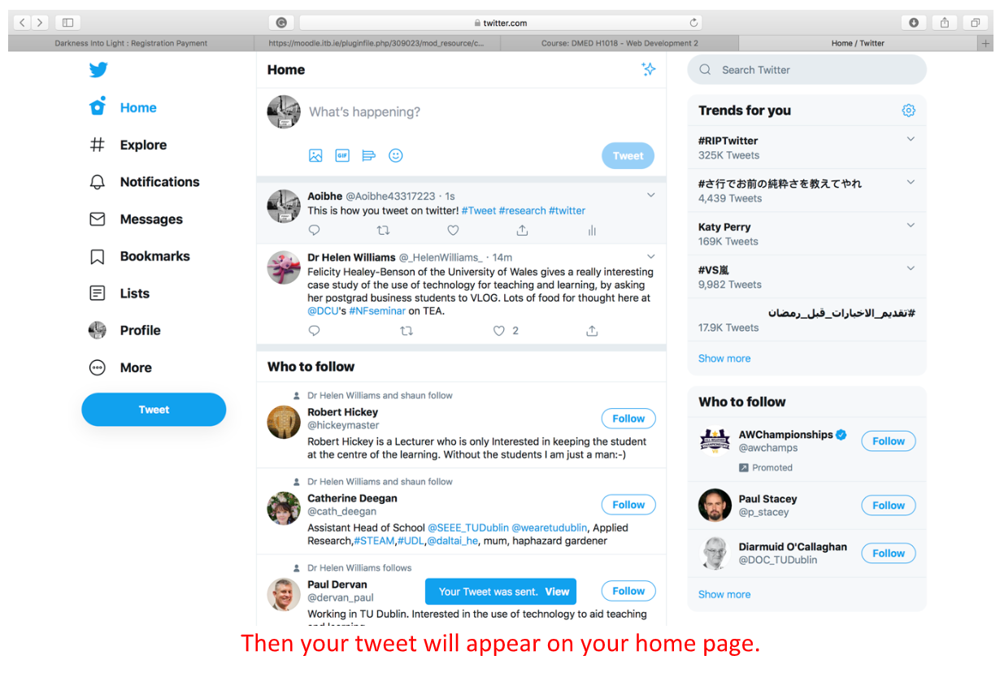
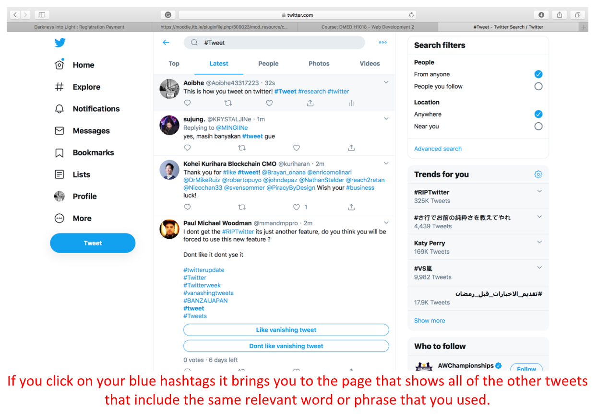
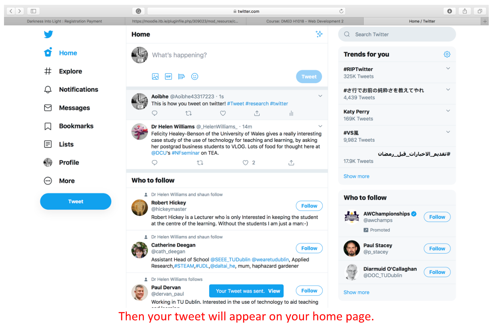
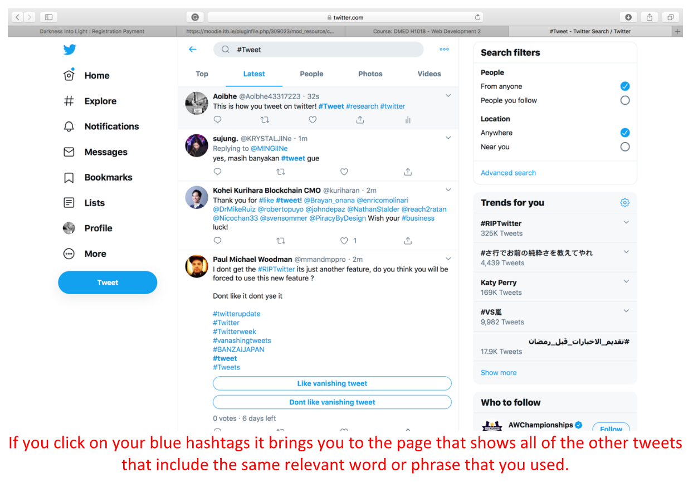

About
Twitter is an application that you can download on any android or apple phone through the app/play store for free. Twitter is a social media platform that allows you to post messages known as “tweets”, it allows you to like posts by other users and retweet their posts on your own page. Twitter was founded in 2006 in San Francisco. On twitter you can use the hashtag key before a relevant word, this allows your tweets to be found easier by other users. By clicking on a hashtag in a tweet it brings you to any other tweets that also include that word or phrase. Twitters logo since 2010 is of a white bird on a light blue background. The bird is said to be the “twitter bird” and that’s why the posts are called “tweets”, as that is the sound the bird would make so it makes sense.


 


